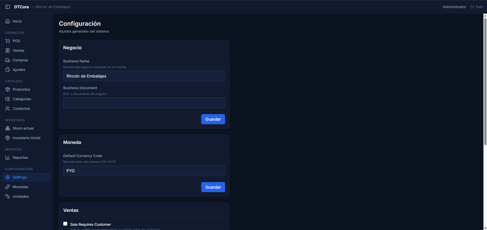
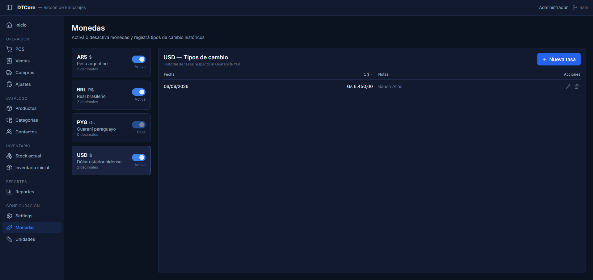
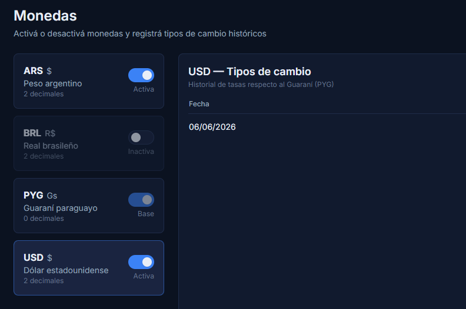
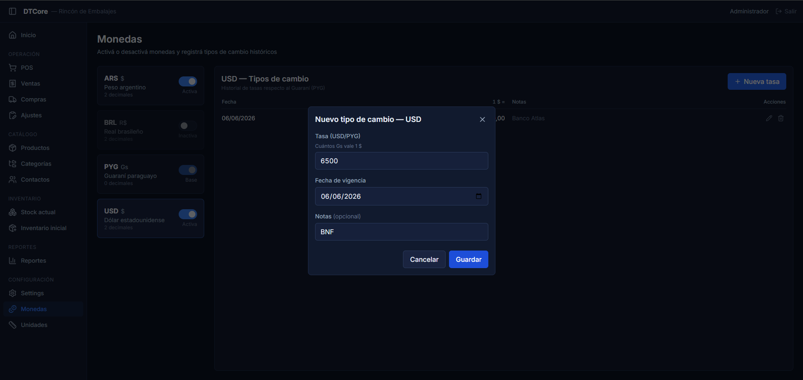

¿Para qué sirve?
La Configuración es el primer lugar que tenés que revisar antes de empezar a operar. Acá ajustás el nombre del negocio, el IVA que aplica por defecto a los productos nuevos y cómo se comporta el sistema con el stock. Son ajustes que se hacen una sola vez al inicio y rara vez se vuelven a tocar.
Las Monedas te permiten habilitar el dólar (USD), el real (BRL) u otras monedas para registrar compras o ventas en esa divisa. Para que funcione, también tenés que cargar el tipo de cambio del día: cuántos guaraníes vale una unidad de esa moneda. Esto se actualiza cada vez que cambia la cotización.
Parte 1 — Configuración general
-
1
Ir a la pantalla de Configuración
En el menú lateral (la barra de la izquierda), buscá la sección Configuración y hacé click en Settings.

La pantalla está dividida en cuatro tarjetas independientes. Cada tarjeta tiene su propio botón Guardar al pie.
-
2
Tarjeta "Negocio" — datos del comercio
Revisá y completá los dos campos de esta tarjeta:
- Business Name — el nombre del negocio tal como aparece en el encabezado del sistema. Ejemplo: "Almacén Central".
- Business Document — tu RUC u otro número de identificación fiscal. Podés dejarlo en blanco si no lo necesitás.
Cuando termines, hacé click en Guardar al pie de esta tarjeta.
-
3
Tarjeta "Moneda" — moneda principal
El campo Default Currency Code muestra la moneda principal del sistema. Para negocios en Paraguay debe decir siempre PYG (Guaraní).
⚠ No cambies este campo Modificar la moneda principal puede alterar todos los cálculos del sistema. Solo tocá este valor si tu administrador lo indica expresamente. -
4
Tarjeta "Ventas" — IVA y cliente obligatorio
Hay dos opciones para configurar según tu operativa:
- Sale Requires Customer (casilla de verificación) — si la activás, el sistema pedirá que selecciones un cliente antes de finalizar cada venta. Útil si querés llevar un registro de a quién le vendés. Si la desactivás, podés cobrar sin registrar el cliente (venta anónima).
- Default Tax Rate — el porcentaje de IVA que el sistema asigna automáticamente al crear un producto nuevo. En Paraguay los valores válidos son 0 (exento), 5 o 10 (porcentaje). El 10% es el más habitual para artículos de venta general.
⚠ El IVA por defecto solo afecta a productos nuevos Cambiar este valor no modifica el IVA de los productos que ya existen en el catálogo. Solo aplica a los que crees a partir de ese momento.Hacé click en Guardar al pie de esta tarjeta.
-
5
Tarjeta "Stock" — stock negativo y alerta de stock bajo
- Allow Negative Stock (casilla de verificación) — si la activás, el sistema permite registrar una venta aunque no haya stock suficiente (el stock puede quedar en negativo). Si la desactivás, el sistema bloquea la venta y muestra un error cuando el stock no alcanza.
- Low Stock Default Threshold — la cantidad de unidades a partir de la cual el sistema muestra una alerta de "stock bajo". Ejemplo: si ponés 5, cuando un producto tenga 5 o menos unidades el sistema lo marcará con alerta.
⚠ Cuidado con "Allow Negative Stock" Tener esta opción activada permite vender más de lo que hay en el depósito. Si usás esta función, revisá periódicamente el inventario y hacé ajustes de stock para regularizar las diferencias.Hacé click en Guardar al pie de esta tarjeta.
Parte 2 — Monedas y tipos de cambio
-
1
Ir a la pantalla de Monedas
En el menú lateral, en la sección Configuración, hacé click en Monedas.

La pantalla tiene dos paneles: a la izquierda, las monedas disponibles; a la derecha, el historial de tipos de cambio de la moneda seleccionada.
-
2
Activar o desactivar una moneda extranjera
Cada moneda muestra un interruptor (toggle) a la derecha de su tarjeta. Cuando el interruptor está en azul, la moneda está activa y aparece disponible en las pantallas de compras y ventas. Cuando está apagado, la moneda queda oculta.
Hacé click en el interruptor para activar o desactivar la moneda. El sistema confirma el cambio con un mensaje breve.

⚠ PYG no se puede desactivar El Guaraní (PYG) es la moneda base del sistema. Su tarjeta muestra la etiqueta "Base" y el interruptor está bloqueado. -
3
Registrar el tipo de cambio del día
Hacé click sobre la tarjeta de la moneda (por ejemplo, USD) para seleccionarla. En el panel de la derecha, hacé click en el botón azul Nueva tasa.

Se abre un formulario con tres campos:
- Tasa (USD/PYG) — cuántos guaraníes vale 1 dólar (o 1 unidad de la moneda seleccionada). Ejemplo: 7350 significa que 1 USD = 7.350 Gs.
- Fecha de vigencia — la fecha desde la que aplica esta tasa. Por defecto el sistema pone la fecha de hoy. Podés cambiarlo si querés cargar una tasa retroactiva.
- Notas (opcional) — podés anotar de dónde salió el valor. Ejemplo: "Cotización BCP mediodía".
Hacé click en Guardar para confirmar. La nueva tasa aparece en la parte superior de la tabla.
⚠ Cargá la tasa antes de registrar operaciones del día El sistema usa la tasa más reciente cuya fecha de vigencia sea anterior o igual a la fecha de la transacción. Si no hay ninguna tasa cargada, no podrás completar compras ni ventas en esa moneda. -
4
Editar o eliminar una tasa existente
En la tabla de tipos de cambio, cada fila puede mostrar dos íconos al final: un lápiz (editar) y un tacho (eliminar). Estos íconos solo aparecen en la fila de la tasa más reciente, y únicamente si esa tasa no fue utilizada en ninguna compra o venta todavía.
Al hacer click en el lápiz se abre un formulario que permite corregir el valor de la tasa y las notas. La fecha de vigencia no se puede cambiar desde la edición — si la fecha también estaba mal, eliminá la tasa y cargá una nueva.
⚠ Las tasas usadas en transacciones no se pueden editar ni eliminar Si una tasa ya fue utilizada en una compra o venta confirmada, los íconos de editar y eliminar no aparecen para esa fila. Esto es intencional: el sistema preserva los valores históricos para que los reportes pasados no cambien. Si cometiste un error en la cotización, cargá una nueva tasa con la fecha y el valor correctos — las transacciones futuras usarán la nueva tasa.
Consejos / Errores comunes
- Guardá sección por sección en la Configuración La pantalla de Settings tiene un botón Guardar separado por cada tarjeta (Negocio, Moneda, Ventas, Stock). Si editás varios bloques y solo guardás uno, los demás cambios se pierden al salir o recargar la pantalla.
- IVA en Paraguay: 0%, 5% o 10% El 10% aplica a la mayoría de artículos de venta general. El 5% aplica a algunos alimentos y medicamentos. El 0% (exento) aplica a alimentos de canasta básica, entre otros. Consultá con tu contador si tenés dudas sobre qué tasa corresponde a tu rubro.
- Actualizá el tipo de cambio todos los días que operés en moneda extranjera Si no cargás una tasa nueva, el sistema usa la última registrada, que puede estar desactualizada. Se recomienda cargar la cotización al inicio de cada jornada antes de registrar la primera compra o venta en esa moneda.
- Error: "No se pudo cargar la configuración" El sistema no puede conectarse al servidor. Verificá que estés dentro de la red WiFi del local y que la PC-servidor esté encendida. Si el problema persiste, contactá a tu administrador.
- Error: "No se pudo cargar la lista de monedas" Mismo origen que el error anterior: problema de conexión con el servidor. Verificá la red y volvé a intentarlo en unos minutos.
- Los botones de editar/eliminar no aparecen en una tasa de cambio Significa que esa tasa ya fue usada en al menos una compra o venta, o que no es la más reciente. Solución: cargá una nueva tasa con el valor correcto. Las transacciones anteriores no se modifican — eso es correcto, ya que los reportes históricos deben mantener los valores originales.
- La moneda USD aparece en compras pero no en ventas (o viceversa) Verificá que la moneda esté activa (interruptor en azul en la pantalla de Monedas) y que haya al menos una tasa de cambio cargada. Si falta cualquiera de las dos cosas, la moneda no estará disponible.